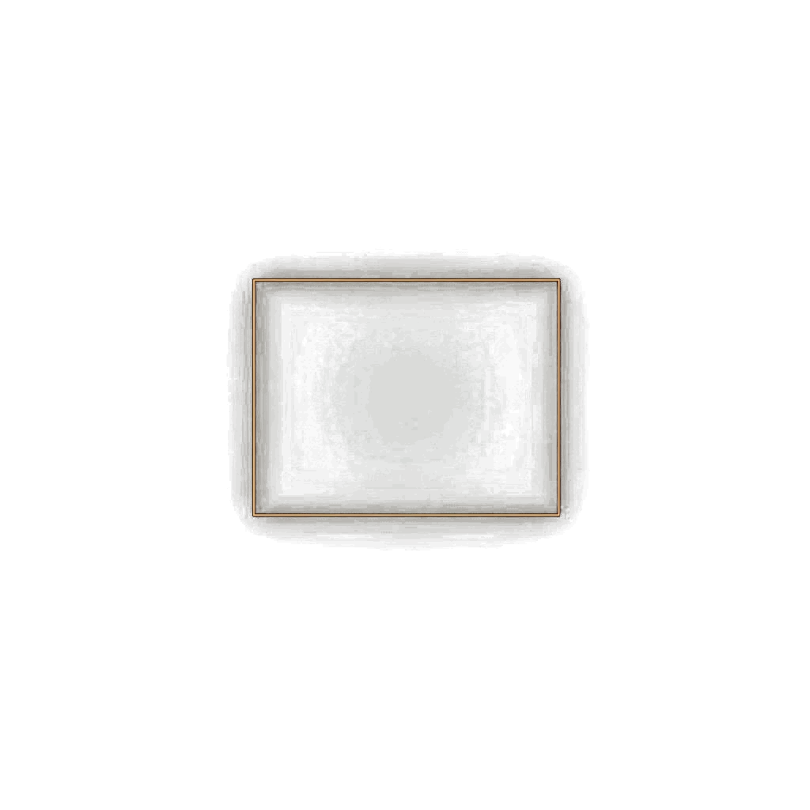
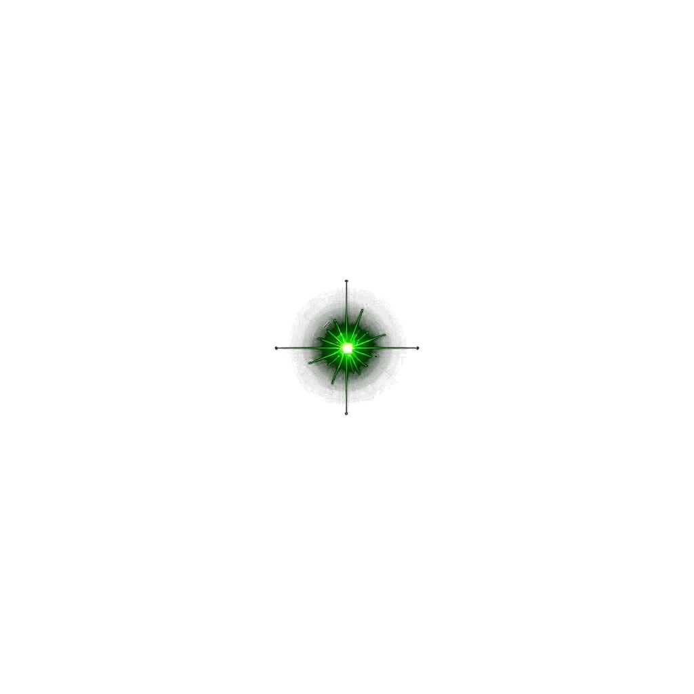
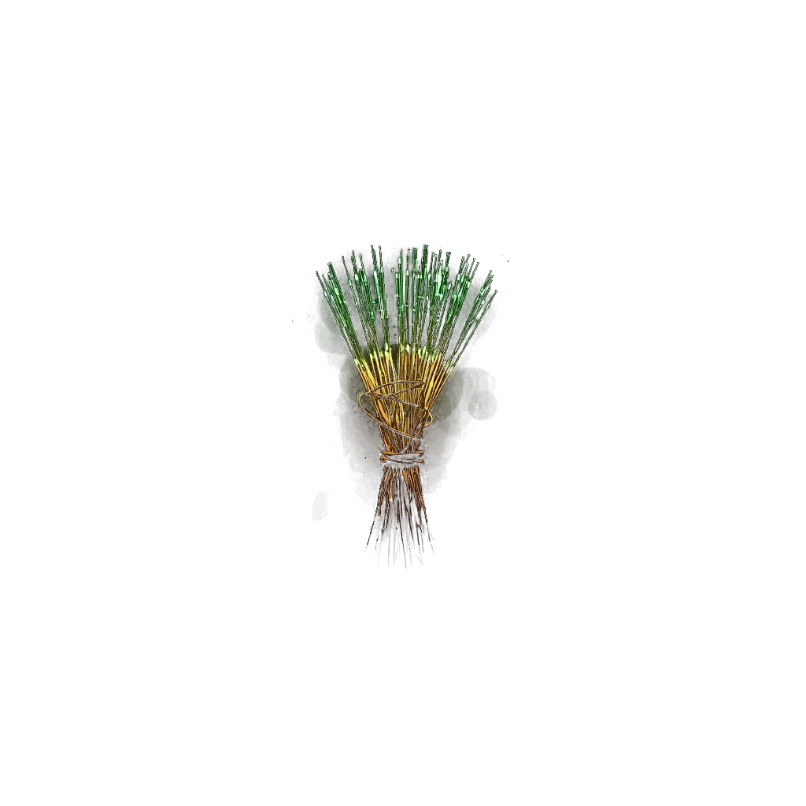
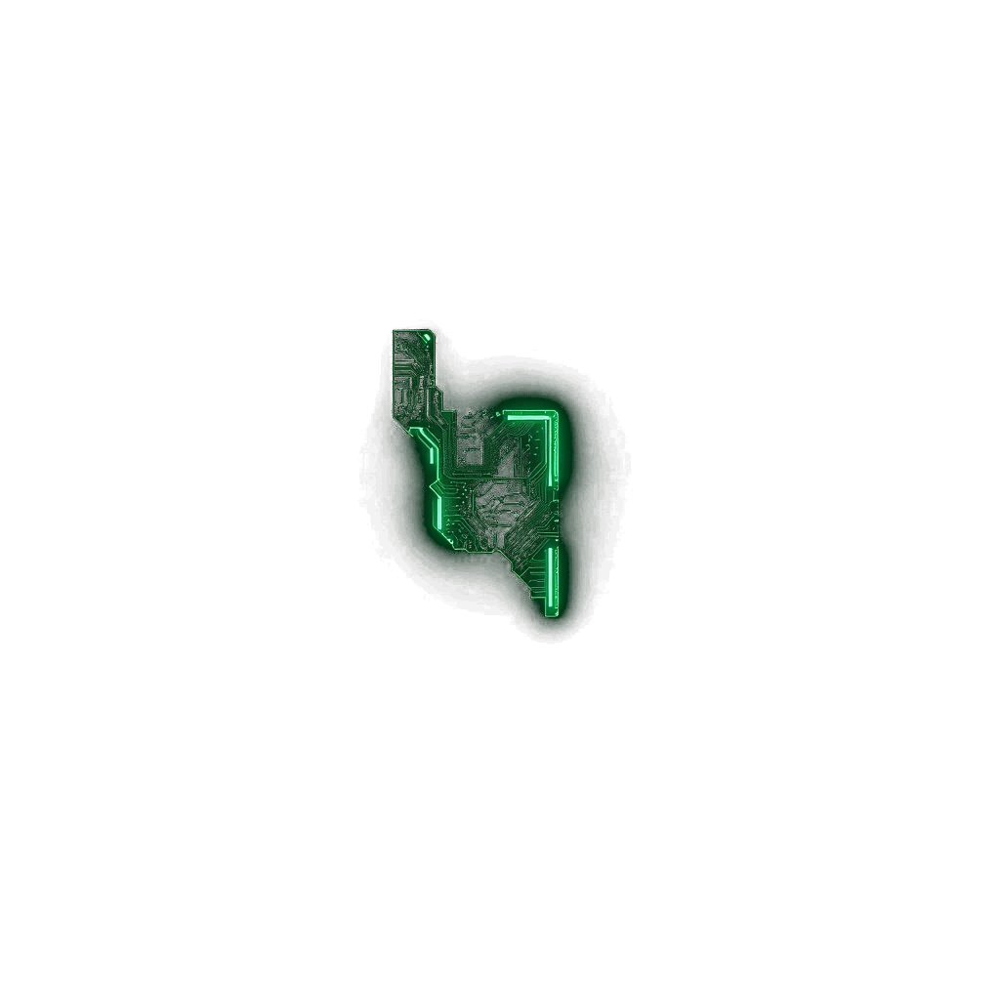
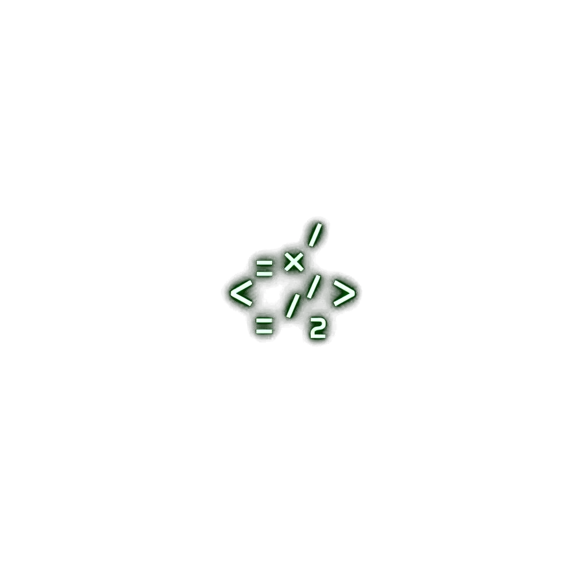

Damon Wu
AI Agent Engineer & Forward-Deployed Software Engineer. I design and ship autonomous agents — on LangChain and AI tools (eg: Claude Code) — that solve real business problems inside real production systems.
Where agents meet the business.
I'm a software engineer specializing in TypeScript and JavaScript, focused on designing, building, and deploying autonomous AI agents inside real business workflows. I work close to the problem — embedded with teams, shipping agentic systems on frameworks like LangChain and AI tools (eg: Claude Code) — turning ambiguous business pain into working, production software.


Shipped in production.
To be defined
- To be defined
- To be defined
- To be defined
Project: Oh My Workers
- Designed and implemented a multi-tool agent that automates support triage across three internal systems.
- Daily CornJob for Github trending projects and AI news subscription by Telegram bot.
- Evaluate agents performance by creating eval functions.
Customer support AI solution
- Enhanced customer support efficiency by embedding AI-driven automation within Zendesk, streamlining processes for subscription management requests.
- Evaluated multiple AI solutions and collaborated with stakeholders to present strategic proposals, ensuring alignment between technological innovation and business needs.


Agents in the wild.
Support Agent Orchestrator
- Multi-tool agent automating tier-1 support triage across three internal systems.
- Cut manual handling time by routing routine cases end-to-end.
Codebase Copilot
- Internal agent that answers codebase questions and drafts PRs against real repos.
- Built on the Claude Code with custom tool definitions for the org's stack.
Ops Signal Agent
- Watches business metrics, flags anomalies, and triggers agent-driven remediation workflows.

Stack.
Let's build the agent.
Open to Forward-Deployed / AI Solutions Engineer roles where shipping agents into real workflows is the job.